Tasty
E-commerce website case study
An online store for Tasty, a Tunisian brand of natural peanut butter. From the first browse to checkout, I wanted the site to feel as warm and good as the spreads themselves.
- E-commerce
- Branding
- UX / UI
- Responsive
The goal?
Build a sweet & smooth journey that makes healthy indulgence irresistible.
Let’s dive in!
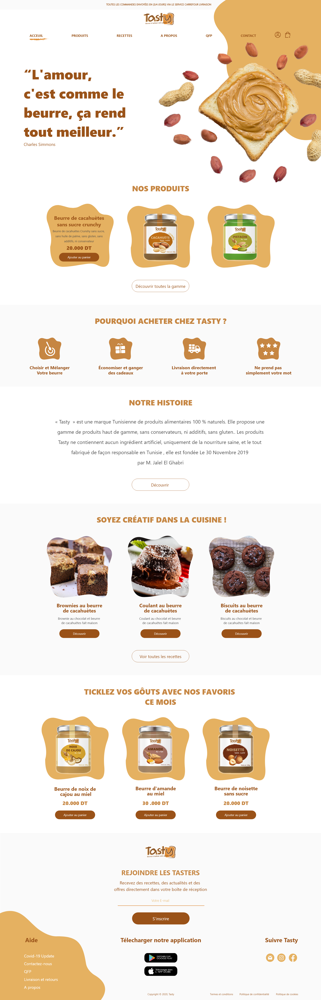
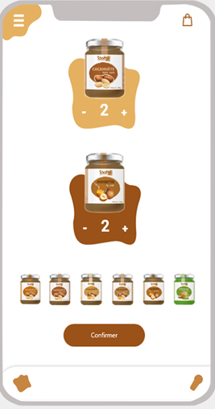
The brief
Great product.
No shelf presence
online.
Tasty makes premium peanut butter in Tunisia: no additives, no palm oil, no shortcuts. Online, none of that warmth survived. The brand needed visibility, trust and a real mobile experience, for health-conscious families who buy with their eyes first.
What was wrong
- 1Products were invisible in a crowded market.
- 2No storytelling, so no reason to trust a premium price.
- 3Mobile shoppers had nowhere comfortable to land.
What success meant
- 1Storytelling that makes the jar look delicious.
- 2Browsing that feels like walking a market stall.
- 3Conversion built on clarity, not pressure.
- 4A community of tasters, not just customers.
From first look to front door
Experience
Flow.
The shop is meant to be simple and easy to move through. Here is how someone goes from spotting the peanut butter to having it show up at their door.
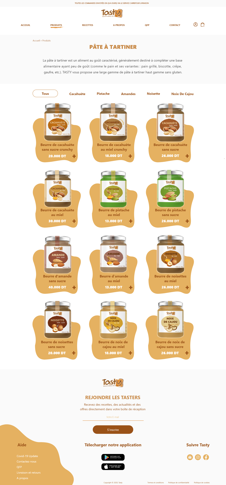
Users browse the range of delicious peanut butters, explore flavors and find their favorites.
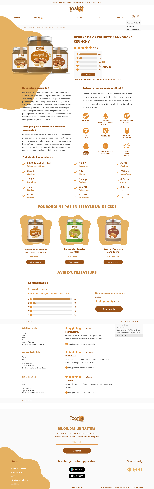
Full product info, ingredients, benefits and nutritional value to make informed choices.
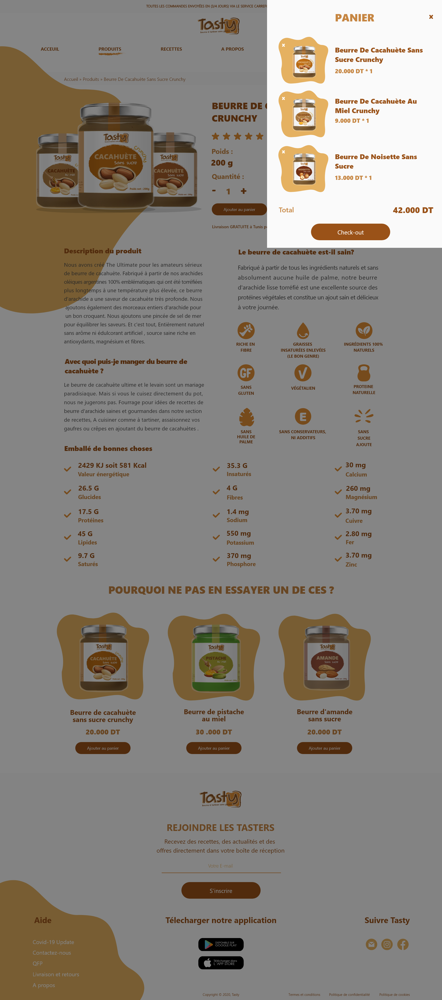
Products are added easily, with a clear summary and total overview.
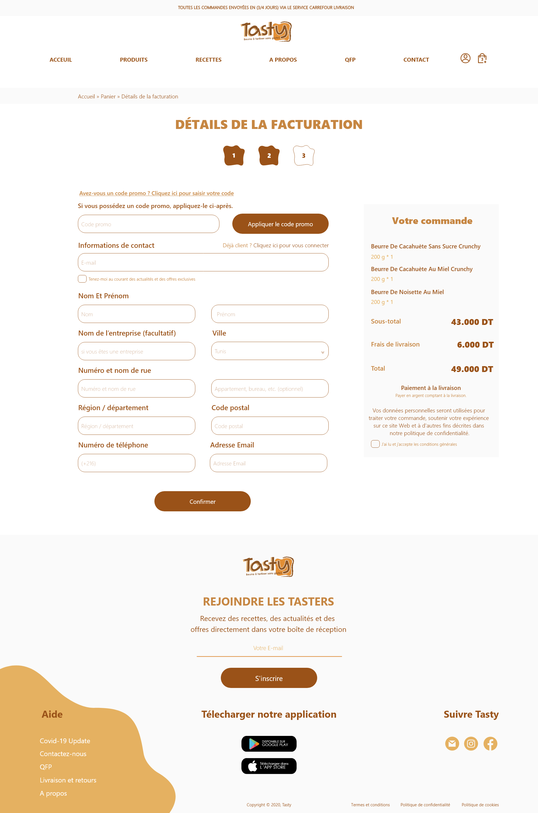
A quick and secure checkout with a clean form and transparent order summary.
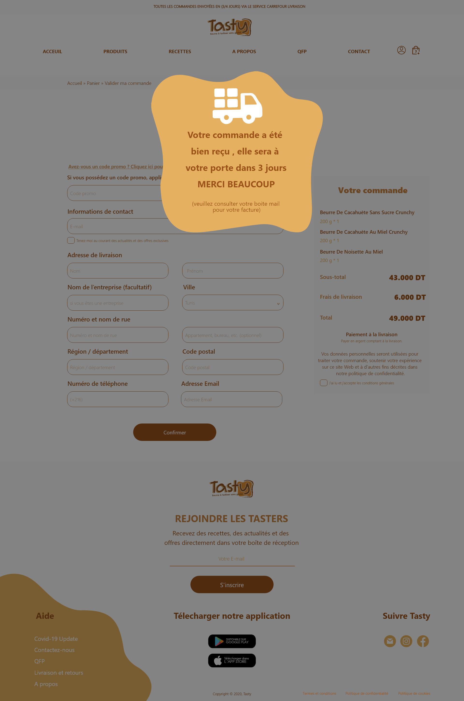
A warm confirmation, and users can track their order with peace of mind.
Structure first
Nineteen tries
at one homepage.
Before any flavor, the argument happened in grayscale. Nineteen homepage iterations, three fidelity stages, five flows validated with real shoppers. When a layout survives without color, color becomes a reward instead of a rescue.
19 iterations · 3 fidelity stages · 5 validated flows
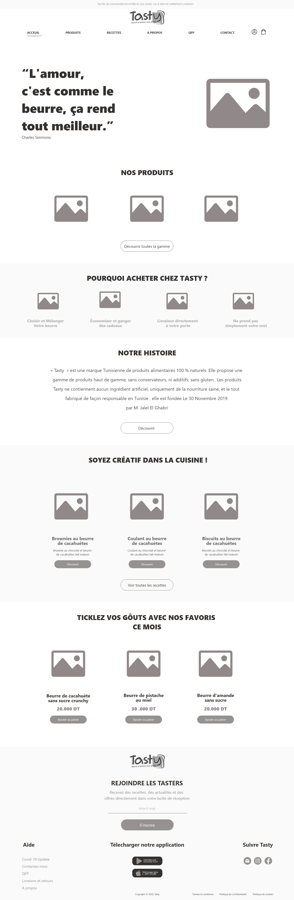
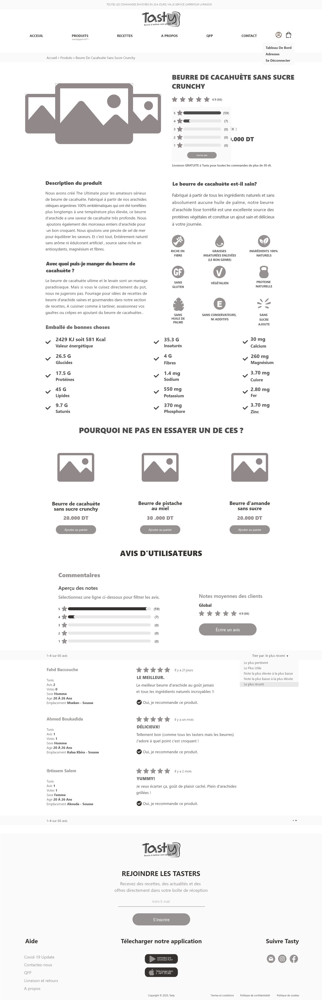
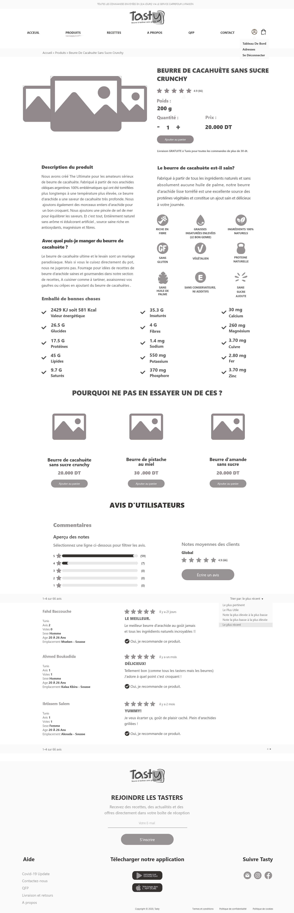
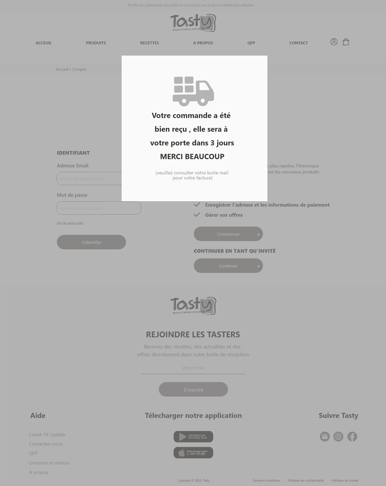
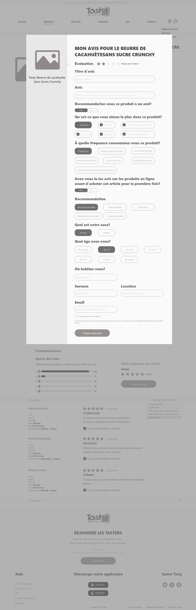
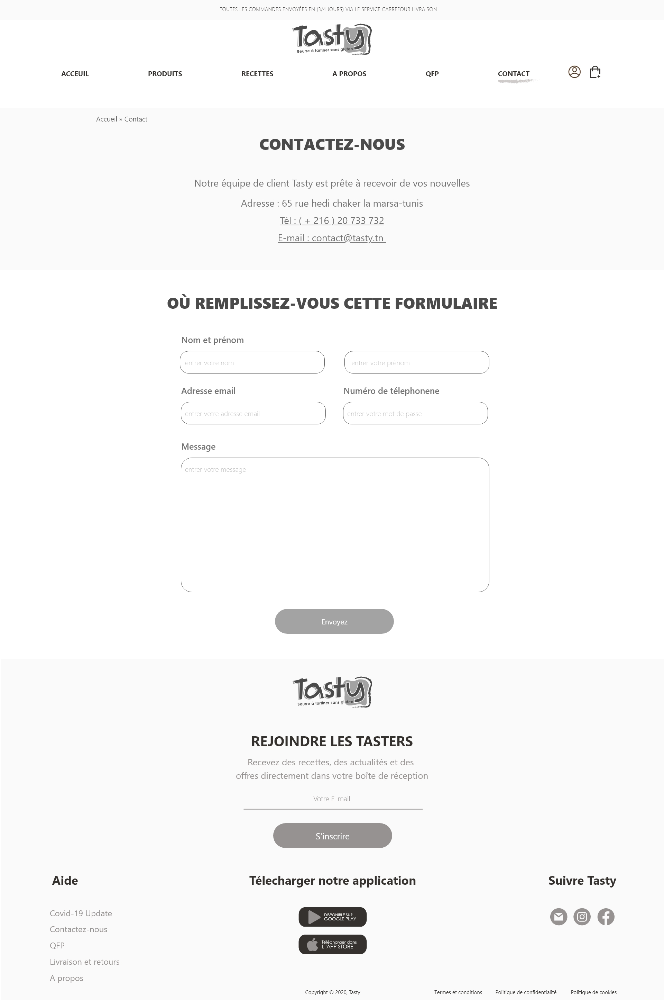
Useful content that builds confidence
Content
& Trust.
Tasty is more than a shop. There are recipes, simple guides, and straight answers about what goes in the jar. Leading with content like this builds trust and keeps people coming back.
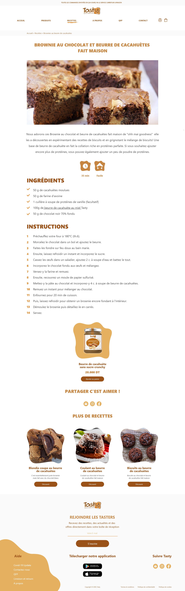
Step-by-step guidance for perfect homemade results.
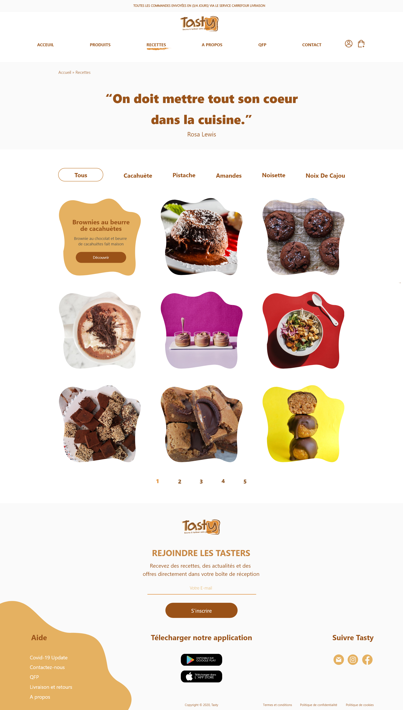
Browse categories and discover delicious ideas.
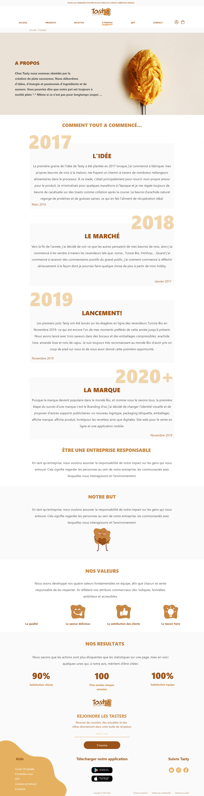
The journey, the values and the mission.
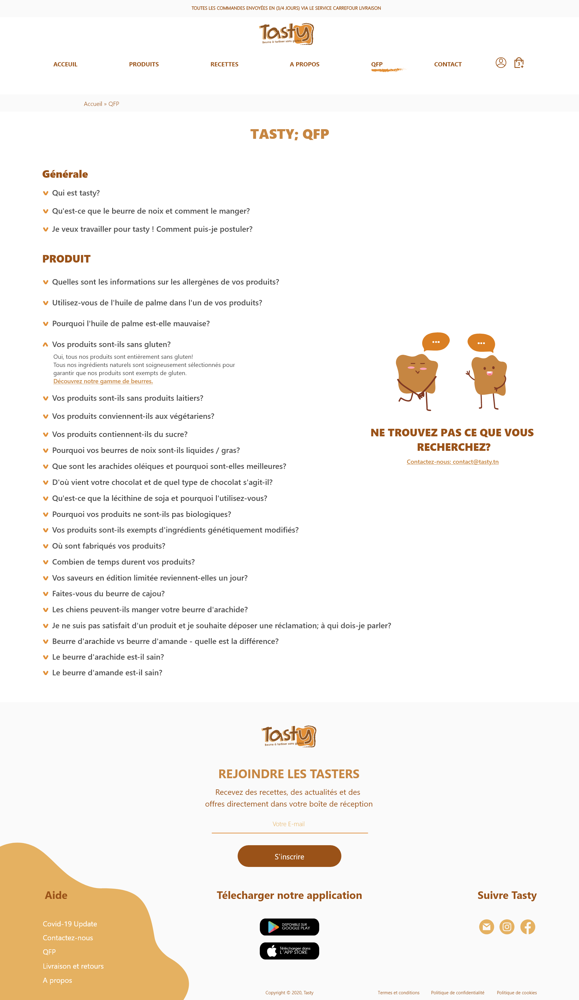
Clear answers to common questions.
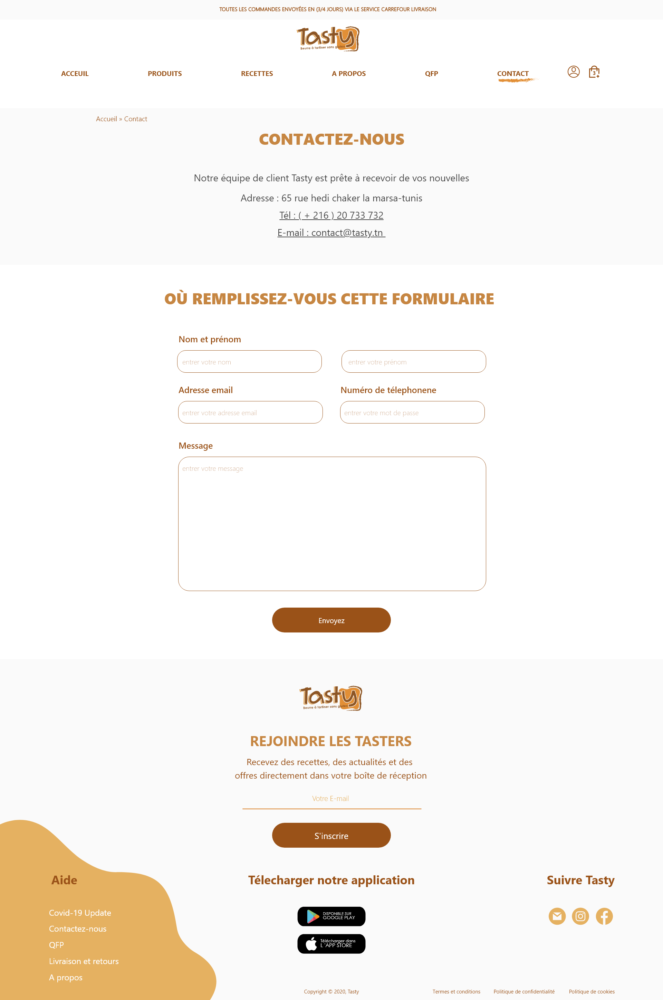
Easy ways to get in touch with the team.
A look that stays warm and consistent
Design System
& UI Highlights.
Tasty’s design system leans on warmth, natural materials, and keeping things simple. Rounded shapes, a tasty color palette, and friendly components make the shop feel approachable and easy to trust.
01. Color palette
02. Typography
L’amour, c’est comme le beurre, ça rend tout meilleur.
03. UI components
Buttons
Pills / Filters
Rating
★★★★★ 4.9 (60)
Icon badges
Form fields
Review card
Le meilleur beurre d’arachide au goût jamais, et tous les ingrédients naturels incroyables !!
✓ Oui, je recommande ce produit.04. Organic shapes
Soft, rounded shapes show up across backgrounds, cards, and illustrations, and they give the brand a warmer, more playful feel.
05. Design in context
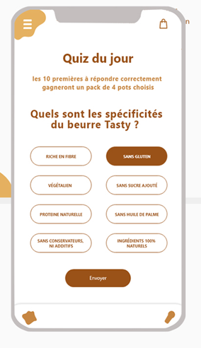
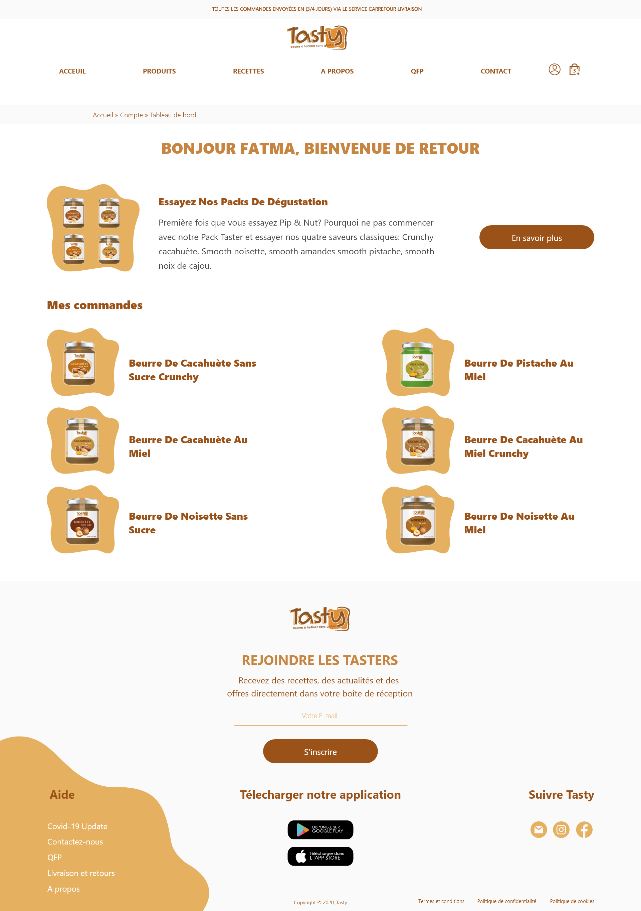
Final
Showcase.
The whole Tasty experience, made with love.
From the first browse to checkout, Tasty is meant to feel good to use, and to put natural ingredients and the pleasure of real food front and center.
-
Warmer brand presence
A friendly, tasty universe that builds trust.
-
Clearer shopping flow
A clear path from finding a product to buying it.
-
Better content discovery
Recipes, stories and values, easy to explore.
-
Playful, trustworthy experience
A nice balance of fun and clarity.
Thanks for viewing!
Case 004 · Tasty · designed in Japan by Hatem Dahech